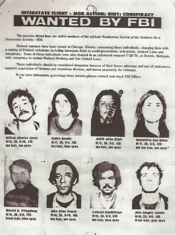
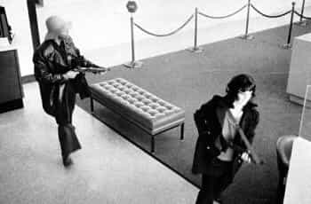

< < < Back
The Stories Of Two Domestic Terrorist Groups That Were Dropped In The Memory Hole – Return Of Kings
We often remember the late 1960s and early 1970s as a time of peace and love. Despite that, there was an undercurrent of violence. Street crime was skyrocketing, thanks to the judicial leniency back then. This was inspired by the “criminals are victims of society” meme, and it took a couple of decades even to begin to repair the damage. Further, the climate of agitation caused the summers to flare up with inner city race riots.
Political violence rose, reaching epidemic proportions. It would take a thick book to document all of it in the USA alone, but I’ll focus on two well-known radical organizations. The lessons of the past are especially relevant today, with the recent upsurge in rioting orchestrated by very wealthy and well-connected groups and individuals; a problem also faced abroad. Likewise troubling are gangs numbering tens of thousands each, sometimes crossing state (or even national) lines, effectively paramilitary criminal organizations.
The Weathermen

The Weathermen (also called the Weather Underground) were a militant splinter group originating from Students for a Democratic Society. They numbered a few dozen active members, and I’ll highlight some of the most notable ones. Some considered them as basically Robin Hood’s Merry Weathermen (and some still do), but more thoughtful leftists realize that wasn’t so.
Diana Oughton, the daughter of a wealthy and prominent banker, grew up in the picturesque small town of Dwight, Illinois. In her youth, she played piano and the flute and frequently enjoyed family trips to the Chicago opera.
Then she enrolled in Bryn Mawr, exposed to radicalism for the first time. At the age of nineteen, she attended her junior year at the University of Munich. There, a guy named Peter (who was either a boyfriend, or neck deep in the Friend Zone) steered her further away from her family’s conservatism. Upon returning to the USA, she got hip to social justice, well-intentioned at the time. After reading Black Like Me, she tutored inner-city residents in Philadelphia. Then she went to rural Guatemala for humanitarian work, and became increasingly radicalized as she became ashamed of the USA’s wealth and her upper-class background. This too seems odd, since spending two years improving the lives of the villagers wasn’t a mere symbolic effort.
She later met her future boyfriend Bill Ayers. During college, he became involved with the peace movement, leading to other things. They joined the SDS (in which my father attained prominence and a humorous bit of notoriety). Oughton established her feminist creds there. According to the Wiki page:
In March 1968, Oughton helped create a women’s liberation group at a time when the issues were just beginning to emerge among radicals. The group met every week or so, wherever the women could find room. Most of the talk seemed to center on the subordinate role of women in the radical movement and on the sexual oppression of women by the “macho” tendency of males to regard sex as conquest. During these meetings Oughton often discussed the role that women played in the SDS, which was a combination of being a sexual object, an office clerk, and a housekeeper.
From the SDS emerged the Weathermen, largely alienating the moderates. My uncle recalls the split: “I left when they went commie.” Their beliefs were a hodgepodge of leftist stuff (including an unusually toxic overdose of White guilt), with a staggering number of radical and Communist alliances both in the USA and abroad, but their major contention was the Vietnam War.
They went underground, experimenting with countercultural living in fashion then, including kinky sex (to purge themselves of their bourgeois tendencies, of course). Despite that, it was a fairly miserable existence, crowded in filthy hideouts and working themselves into a revolutionary lather with nonstop political rhetoric and samokritika sessions.
On the fateful day of March 6, 1970, Diana was at a Greenwich Village safe house where they had a cache of 100 pounds of dynamite. She was assembling a nail bomb, meant to be used at an upcoming dance at Fort Dix. This is clearly at odds with the notion that the Weathermen only wished to cause property damage. After a mistake, she met the fate intended for a roomful of NCOs and their dates. There wasn’t much left of her, and she took two Weathermen comrades—Ted Gold and Terry Wilkerson—with her. Some regarded her as a heroine or a martyr, though I won’t name names because I respect a couple of them despite their staggering naivety.
Some of their fellow Weathermen fared much better. As for Bill Ayers, he was on the lam for a while, but charges were dropped. Later he became a professor at the University of Illinois. He also has connections to Obama, and—according to some—was a co-writer of one of The Lightworker’s autobiographies, with a shout-out to Diana. As for Bernadine Dohrn—a law graduate and from a comfortably well-off family, and now Bill’s wife—she had a fairly mild legal scrape from refusal to testify. Later, she became an adjunct professor at the Northwestern University School of Law.
As for Kathy Boudin, born to a left-leaning family and another Bryn Mawr graduate, she was also at the Greenwich Village explosion but survived. She got busted after a 1981 armored car heist, working in conjunction with a militant Black group, that turned fatal. (It’s better to get out while the getting is good. For that matter, the end of the Vietnam War would have been as good a time as any for the remaining Weathermen to cut it out.) After being released from prison, she became an adjunct professor at the Columbia University School of Social Work.
Interestingly, that’s the alma mater for several other Weathermen, as well as Richard Cloward, Ruth Bader Ginsburg, Eric Holder, Barack Obama, and Mattress Girl. What’s up with Columbia, anyway? Since it was also the refuge of the Frankfurt School, perhaps Columbia ended up a little ahead of the campus radicalism curve.
Kooky quotes:
He [Peter in Germany] said something which made sense. He said the trouble with America was it had lost its pioneer spirit… it put women in the wrong place and they were becoming neuter. Hurrah for socialism!
These were the words which converted Diana Oughton decisively to radicalism. Come on, even Bernie Sanders could come up with something more inspiring than that!
Dig it. First they killed those pigs, then they ate dinner in the same room with them, then they even shoved a fork into a victim’s stomach! Wild!
That was Bernadine Dohrn, commenting on the Manson murders. The silly things kids say…
The Symbionese Liberation Army

Patricia Soltysik, alias Mizmoon, was from the pretty town of Goleta, California. She was the daughter of a pharmacist in a large family, and a promising student. Mizmoon’s descent into moonbattery began when she enrolled in Berkeley in 1968. Quickly she turned into a radical feminist and self-described revolutionary.
She became a lesbian, and began a relationship with her future accomplice Camilla Hall (alias Gabi), five years her senior. Camilla’s parents were the daughter of a Lutheran minister and the founder and head of the art department of Gustavus College. This Minnesotan became a social worker and activist even before moving to California.
Things really went off the deep end when these lesbian lovebirds met Donald DeFreeze (alias Field Marshal Cinque Mtume), basically the Black version of Charles Manson. He had been radicalized by a couple of prison outreach programs before escaping. He soon became their boyfriend (so much for being lesbians); thug game is especially effective with naive liberals conditioned to believe career criminals are victims of an unjust society. This trio became the nucleus of a gang, the Symbionese Liberation Army. They were Communist militants with a feminist and “social justice” slant, so far out in left field that they made Chairman Mao seem pretty reasonable. What is it about bourgeois misguided youths in the Bay Area, anyway?
The SLA’s debut act was fatally shooting school superintendent Marcus Foster, a Black liberal and by all accounts a decent guy. This was spurred by a “fascist” proposal for student ID cards, intended to keep dope pushers off campuses. Robert Blackburn, his deputy, was seriously injured by the gunfire. Other than shooting people who didn’t deserve it, the SLA was known for a string of bank heists.
Their most famous act was kidnapping Patty Hearst. After a couple of weeks of loathsome brutality, Stockholm Syndrome was setting in. (Aren’t feminists supposed to oppose violence against women?) A few weeks later, they got Hearst (now alias Tania) to participate in a bank holdup. Needless to say, robbing banks was rather out of character for her; communists know a thing or two about brainwashing.
The SLA’s luck ran out, though. On May 17, 1974, there was a police raid on their hideout leading to a massive shootout, and the building caught fire. DeFreeze, Soltysik, Hall, and three other oxygen-wasters died. There was another murder and another bank robbery by their remaining members, but almost all were eventually rounded up and imprisoned. As for Patty Hearst, after six months with the gang, she was arrested; emaciated and clearly unhinged by the experience.
Kooky quote:
Therefore, we of the Symbionese Federation and The S.L.A. do not under the rights of human beings submit to the murder, oppression and exploitation of our children and people and do under the rights granted to the people under The Declaration of Independence of The United States, do now by the rights of our children and people and by Force of Arms and with every drop of our blood, Declare Revolutionary War against The Fascist Capitalist Class, and all their agents of murder, oppression and exploitation.
It’s not clear who wrote their “Declaration of Revolutionary War,” part of which is quoted above. Some believe that DeFreeze wrote it. Since he was a ninth-grade dropout and a mental case, I’m assuming that Soltysik—their “chief theoretician”—was the brains of the operation. Her tedious run-on sentences were the least of her problems.
In summary
With only a few exceptions—DeFreeze in particular—the Weathermen and SLA members started out as good kids. They fit a profile: Baby Boomers young at the time, from middle class to quite wealthy, almost all raised in good homes, many with religious upbringing (typically Protestant or Jewish), mild and well-intentioned.
Still, after being exposed to the radical scene—almost all on campus—they became urban guerrillas. If not for that, they would’ve become regular, law-abiding citizens. It’s gruesome even to imagine the psychological process by which a gentle youth who wants to do good in the world becomes a self-hating SJW type, and finally a militant rebel at war with society.
Most students at the time didn’t take it that far, of course, but many did (and still do) absorb radical ideas from the maelstrom of propaganda they received in college. Young people these days are told that a college degree is a ticket to the middle class (with mixed results), and must endure hefty student loans and four years of indoctrination efforts. Breaking the leftist stranglehold on the educational system and the “mainstream” media will be a key effort in draining the swamp.
Read More: The Real Legacy Of Chile’s Augusto Pinochet